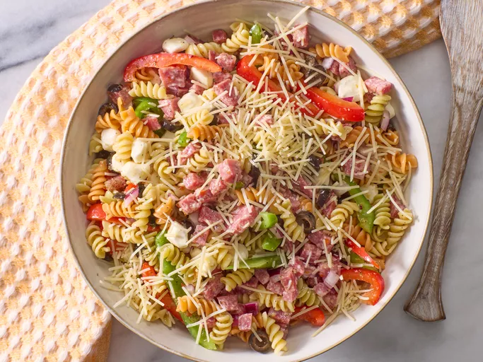

Italian Pasta Salad

Description
This simple Italian pasta salad comes together quickly with salami, colorful vegetables, and flavorful salad dressing.
This Italian pasta salad is a great make-ahead potluck dish. In fact, since the flavors will continue to meld as they sit together in the fridge, this dish might actually taste better if you make it a day in advance.
Ingredients
- 1 (12 ounce) package tri-color rotini pasta
- 3/4 pound Italian salami, finely diced
- 1/2 green bell pepper, sliced
- 1/2 red bell pepper, sliced
- 1/2 red onion, chopped
- 1 (6 ounce) can sliced black olives
- 8 ounces small fresh mozzarella balls (ciliegine)
- 1 cup Italian-style salad dressing
- 3 (.7 ounce) packages dry Italian-style salad dressing mix, or to taste
- 1/2 cup shredded Parmesan cheese
Steps
- Gather all ingredients.
- Bring a large pot of lightly salted water to a boil. Cook rotini pasta at a boil until tender yet firm to the bite, about 8 minutes. Drain and rinse with cold water until cool.
- Combine pasta, salami, bell peppers, onion, mozzarella balls, and olives in a large bowl. Add salad dressing and toss to coat.
- Season pasta salad with dry salad dressing mix and stir to combine.
- Sprinkle with Parmesan cheese before serving. Enjoy!